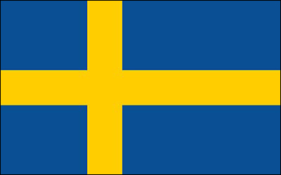
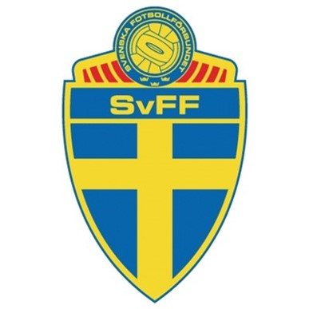

스웨덴
Sweden


FIFA Ranking: 23위
스웨덴의 특징
- 한국 A 대표팀, 올림픽 대표팀 통합 전적: 7전 1승 3무 3패
- 북유럽 선수들의 뛰어난 신체조건으로 수비와 공격 모두 압도적인 '힘'을 보여줌
- 뛰어난 수비수들로 4 BACK 수비를 구축하고 순식간에 역습을 하는 전술을 사용
- 중앙 수비수 평균 신장이 약 190CM이상
감독
야네 안데르손
- 2016년 6월 감독 부임
- 현지 언론을 통해 "한국에 대해서는 아는 게 거의 없다"고 말해옴
- 이번 월드컵에 즐라탄을 발탁하지 않음
2018 스웨덴 대표팀 주요 선수
- (GK) 크리스토퍼 - 스완지 시티
-
(DF) 미카일 루스티그 - 셀틱FC
-
(DF) 빅토르 린델뢰프 - 맨체스터 유나이티드
-
(DF) 마르틴 올손 - 스완지 시티
-
(DF) 루도빅 아우구스틴손 - 베르더 브레멘
-
(DF) 필립 헬란데르 - 볼로냐
-
(DF) 에밀 크라프트 - 볼로냐
-
(DF) 폰투스 얀손 - 리즈 유나이티드
-
(MF) 세바스티안 라르손 - 헐 시티
-
(MF) 에밀 포르스베리 - RB라이프치히
-
(MF) 알빈 엑달 - 함부르크
-
(FW) 욘 구이데티 - 알라베스
하이라이트 영상